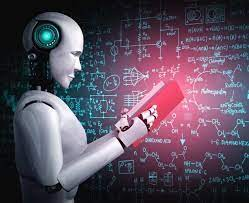

Artificial Intelligence

Artificial intelligence (AI) is intelligence—perceiving, synthesizing, and inferring information—demonstrated by machines, as opposed to intelligence displayed by non-human animals or by humans.Artificial intelligence is a field of computer science which makes a computer system that can mimic human intelligence. It is comprised of two words "Artificial" and "intelligence", which means "a human-made thinking power." Hence we can define it as,
Artificial intelligence is a technology using which we can create intelligent systems that can simulate human intelligence.
AI and ML
Artificial intelligence and machine learning are the part of computer science that are correlated with each other. These two technologies are the most trending technologies which are used for creating intelligent systems.
Although these are two related technologies and people use them as a synonym for each other, but still both are the two different terms in various cases.
On a broad level, we can differentiate both AI and ML as:
AI is a bigger concept to create intelligent machines that can simulate human thinking capability and behavior, whereas, machine learning is an application or subset of AI that allows machines to learn from data without being programmed explicitly.
Difference between AI and ML
 Artificial intelligence is a technology which enables a machine to stimulate human behavior. Machine learning is a subset of AI which allows a machine to automatically learn from past data without programming explicitly. The goal of AI is to make a smart computer system like humans to solve complex problems. The goal of ML is to allow machines to learn from data so that they can give accurate output. In AI, we make intelligent systems to perform any task like a human. In ML, we teach machines with data to perform a particular task and give an accurate result. Machine learning and deep learning are the two main subsets of AI. Deep learning is a main subset of machine learning. AI has a very wide range of scope. Machine learning has a limited scope. AI is working to create an intelligent system which can perform various complex tasks. Machine learning is working to create machines that can perform only those specific tasks for which they are trained. AI system is concerned about maximizing the chances of success. Machine learning is mainly concerned about accuracy and patterns. The main applications of AI are Siri, customer support using catboats, Expert System, Online game playing, intelligent humanoid robot, etc. The main applications of machine learning are Online recommender system, Google search algorithms, Facebook auto friend tagging suggestions, etc.
On the basis of capabilities, AI can be divided into three types, which are, Weak AI, General AI, and Strong AI. Machine learning can also be divided into mainly three types that are Supervised learning, Unsupervised learning, and Reinforcement learning. It includes learning, reasoning, and self-correction. It includes learning and self-correction when introduced with new data. AI completely deals with Structured, semi-structured, and unstructured data. Machine learning deals with Structured and semi-structured data.
Artificial intelligence is a technology which enables a machine to stimulate human behavior. Machine learning is a subset of AI which allows a machine to automatically learn from past data without programming explicitly. The goal of AI is to make a smart computer system like humans to solve complex problems. The goal of ML is to allow machines to learn from data so that they can give accurate output. In AI, we make intelligent systems to perform any task like a human. In ML, we teach machines with data to perform a particular task and give an accurate result. Machine learning and deep learning are the two main subsets of AI. Deep learning is a main subset of machine learning. AI has a very wide range of scope. Machine learning has a limited scope. AI is working to create an intelligent system which can perform various complex tasks. Machine learning is working to create machines that can perform only those specific tasks for which they are trained. AI system is concerned about maximizing the chances of success. Machine learning is mainly concerned about accuracy and patterns. The main applications of AI are Siri, customer support using catboats, Expert System, Online game playing, intelligent humanoid robot, etc. The main applications of machine learning are Online recommender system, Google search algorithms, Facebook auto friend tagging suggestions, etc.
On the basis of capabilities, AI can be divided into three types, which are, Weak AI, General AI, and Strong AI. Machine learning can also be divided into mainly three types that are Supervised learning, Unsupervised learning, and Reinforcement learning. It includes learning, reasoning, and self-correction. It includes learning and self-correction when introduced with new data. AI completely deals with Structured, semi-structured, and unstructured data. Machine learning deals with Structured and semi-structured data.
| AI |
MI |
| ⭕The Artificial intelligence system does not require to be pre-programmed, instead of that, they use such algorithms which can work with their own intelligence. It involves machine learning algorithms such as Reinforcement learning algorithm and deep learning neural networks. |
⭕Machine learning enables a computer system to make predictions or take some decisions using historical data without being explicitly programmed. Machine learning uses a massive amount of structured and semi-structured data so that a machine learning model can generate accurate result or give predictions |
SOME LEARNING FACTS IN QUIZ
Go for it